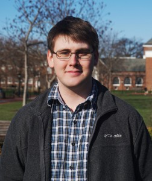

|
I am a PhD Canidate at University of Delaware College of Engineering, where I work on robotics and state estimation. I am currently conducting research in the Robot Perception and Navigation Group (RPNG) under the direction of Prof. Guoquan (Paul) Huang. I have received the University Doctoral Fellowship Award, NASA Delaware Space Grant (DESG) Graduate Fellowship, and Mary and George Nowinski Award for Excellence in Undergraduate Research Award during my time performing research. I received my Bachelor in Mechanical Engineering with Computer Science and Mathematics Minors from the University of Delaware in 2017. |
 |
{kind=link}
|
My primary interest is enabling autonomy for robots through robust and accurate state estimation. Much of my research is mainly focused on visual (cameras) and inertial (IMUs) sensing modalities, but have dabbled in different sensing types to try to either improve robustness or increase overall trajectory accuracy. I also maintain the OpenVINS project, which is a state-of-the-art filter-based visual-inertial estimator that was developed in house by our research group. I have highlighted papers that are of special interest or what I consider my most interesting works. |

|
Matthew Tancik, Vincent Casser, Xinchen Yan, Sabeek Pradhan, Ben Mildenhall, Pratul Srinivasan, Jonathan T. Barron, Henrik Kretzschmar arXiv, 2022 bibtex / project page / arXiv / video We can do city-scale reconstruction by training multiple NeRFs with millions of images. |
|
Special thanks to Jon Barron for the website's source code. |